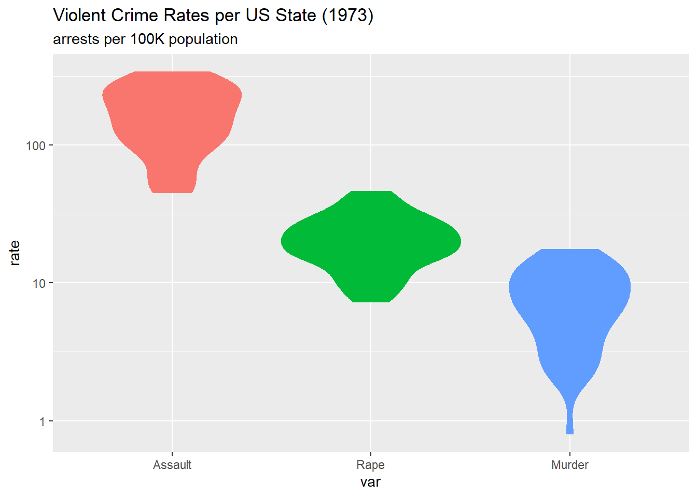
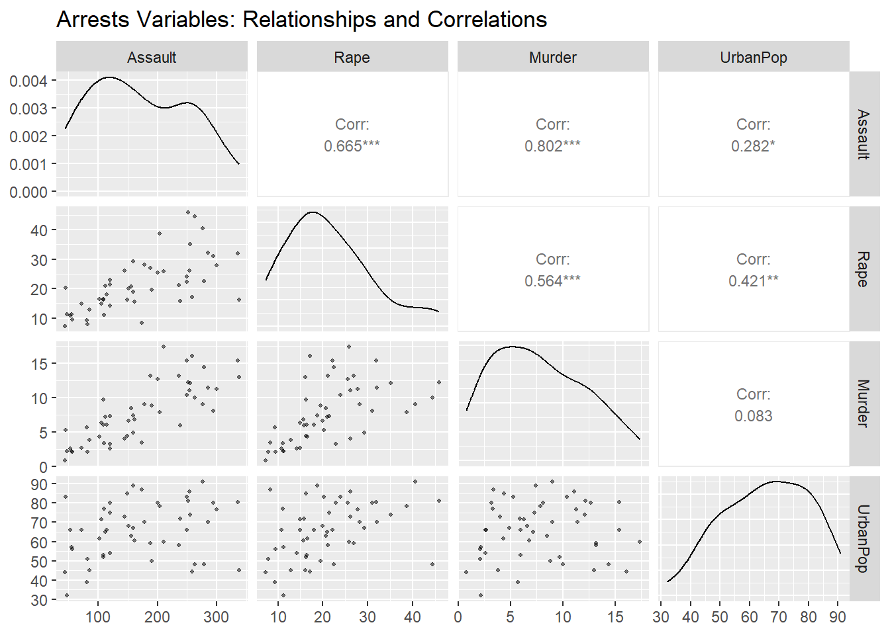
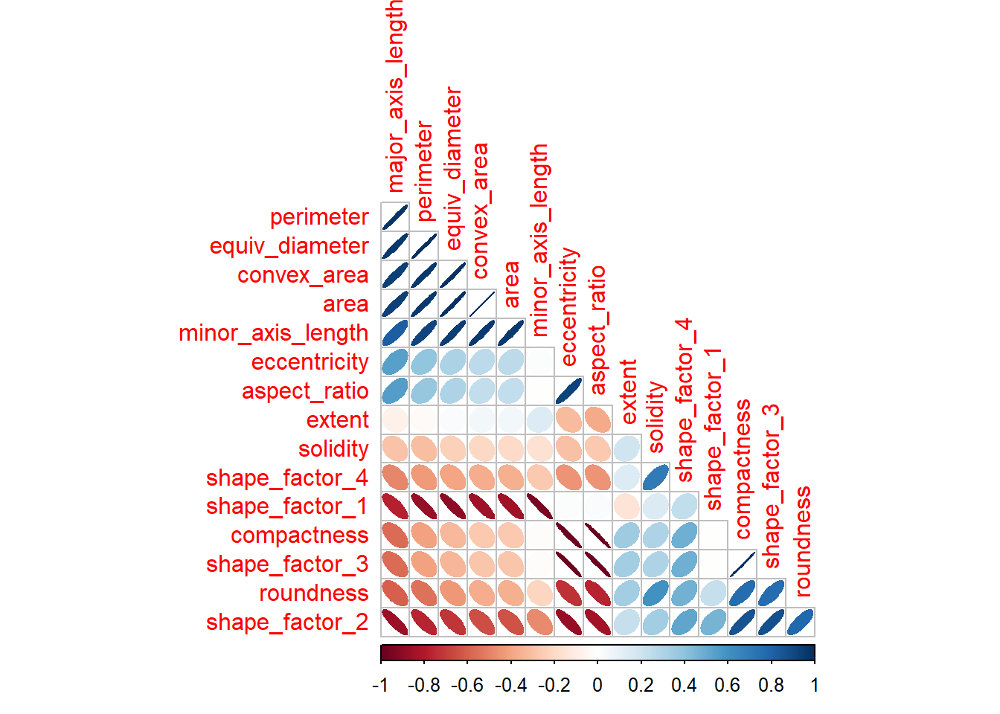
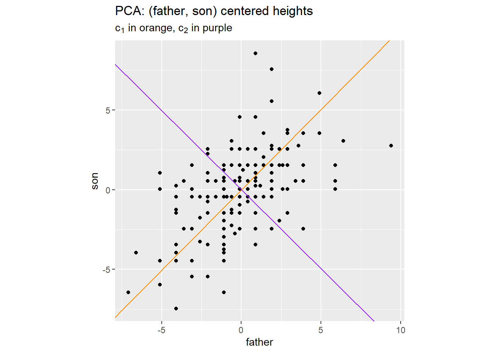

| variable | year | unit | description |
|---|---|---|---|
| Assault | 1973 | 100K | assault arrests per 100K population |
| Rape | 1973 | 100K | rape arrests per 100K population |
| Murder | 1973 | 100K | murder arrests per 100K population |
| UrbanPop | 1973 | PCT | percent of population in urban areas |
7 Dimension Reduction
This chapter addresses the problem of finding and visualizing structure in high-dimensional data. We begin the discussion with example data sets.
7.1 Data Examples
7.1.1 US Arrests
Data analysis often begins with an exploration, using tables and figures to learn more about the data before formulating specific questions or hypotheses. The exploration becomes more difficult as the dimensions of the data set increase. Here’s an example.
McNeil (1977) reviewed the relationship among violent crime statistics per US state and the percent of the population living in urban areas, variables described in Table 7.1 below. With just four variables, we can visualize the full data structure (e.g., using a scatter plot matrix as shown in Figure 7.3). However, the initial exploratory data analysis reveals strong correlations among the three crime variables (Murder, Assault, Rape), suggesting that the data may effectively lie in fewer than four dimensions. Dimension reduction techniques can help us identify these underlying patterns, enabling us to (1) visualize state-level crime patterns in 2D or 3D, (2) identify states having similar crime profiles, and (3) understand whether crime variation is driven by one dominant factor or multiple independent factors.
Table 7.2 below describes related state-level statistics from the same period (the 1970s). The data from both tables are available from the core R package datasets.
| variable | year | unit | description |
|---|---|---|---|
| st_abb | 1963 | chr | 2-letter abbreviation of state name |
| st_nm | 1959 | chr | state name |
| x | 1959 | lat-long | longitude of state center |
| y | 1959 | lat-long | latitude of state center |
| division | 1959 | fct | geo grouping into 9 groups |
| region | 1959 | fct | geo grouping into 4 groups |
| Population | 1975 | 1000 | estimated population |
| Income | 1974 | USD | average income |
| Illiteracy | 1970 | PCT | illiterate percent of population |
| Life Exp | 1969 | YR | life expetency in years |
| Murder_76 | 1976 | 100K | murder rate per 100K population |
| HS Grad | 1970 | PCT | percent high-school graduates |
| Frost | 1960 | DAY | avg number of days below freezing |
| Area | 1959 | mi^2 | land area in square miles |
Figure 7.1 below shows the distribution across the 50 states of each type of violent crime. Rates are calcuated as arrests per 100,000 population. The figure shows these rates on a \(\log_{10}\) scale, since assault arrests are many times more common than rape or murder arrests.

The figure above gives a view of three data variables, that is, three columns of the data matrix. Figure 7.2 below, a 3D scatterplot, gives a complementary view of each of the 50 states as a point whose coordinates are the respective arrest rates for assault, rape, and murder, with each point colored by the value of UrbanPop the percentage of the state’s population living in an urban area. Since individual states correspond to the rows of the data matrix, this figure is a row-based perspective on the data matrix.
Figure 7.3 below exemplifies a matrix of 2D scatter plots, a display method that accommodates more than 3 variables (but not many more, practically speaking).

This figure provides both column-based and row-based views of the data matrix, with the scatter diagrams for each pair of variables providing the row-based perspective.
7.1.2 Dry Beans
Koklu and Ozkan (2020) published a dataset of visual characteristics of dried beans “… in order to obtain uniform seed classification. For the classification model, images of 13,611 grains of 7 different registered dry beans were taken with a high-resolution camera.” The resulting dataset contains 16 morphological features extracted from each bean image, including measures of area, perimeter, compactness, length, width, and various shape factors.
The classification goal is to predict bean variety from these morphological measurements. Successful classification could have many applications, e.g., to improve sorting systems in agricultural processing. However, many of these 16 features are inherently redundant: for example, area and perimeter are strongly correlated, as are various length and width measurements. Dimension reduction can reveal whether bean varieties differ primarily in size, shape, or both, and whether a smaller subset of derived features might achieve comparable classification accuracy with greater interpretability and computational efficiency.
The data are available R package beans, containing a data matrix (tibble, more precisely) of dimension \(13611 \times 17\). The last column of the data matrix is response variable class that assigns one of seven types of bean to each bean-image. The remaining 16 columns of the data matrix are morphological measurements (of shape and size).
Kuhn and Silge (2022) develop and evaluate different classification models for these data. 1 They begin by examining the correlation coefficients for each pair of the 16 feature vectors. Figure 7.4 follows their example.

In this figure, the absolute value of each correlation coefficient is represented by the narrowness of the drawn ellipse and the depth of its color. The sign of the correlation coefficient is represented by both the color and direction of the ellipse.
These size and shape features measure similar concepts. Consequently, several pairs of feature vectors are highly correlated, 2 which offers the possibility of transforming the 16 original features into a smaller set without sacrificing classification power.
7.1.3 Wine Quality
P. Cortez et al. (2009) model wine preference as a function of 12 physicochemical properties of wine, which are listed in Table 7.3. The quality score is the median of three expert tastings. The data consist of 6497 wines, 1599 red and 4898 white. 3 4
The modeling goal is to understand the chemical properties influencing wine quality ratings and to predict quality from objective laboratory measurements. Apart from wine color (red or white), the remaining 11 physicochemical features include related measurements, e.g., pH, fixed acidity, and citric acid are chemically interrelated, as are free and total sulfur dioxide. Dimension reduction can help us: (1) visualize the chemical space that wines occupy in 2D or 3D, (2) identify whether wine quality varies along a small number of chemical gradients (e.g., acidity vs. alcohol content), (3) understand the chemical differences between red and white wines, and (4) determine whether a smaller set of derived features might predict quality as well as the full set of measurements.
| variable | unit |
|---|---|
| fixed acidity | g(tartaric acid)/dm3 |
| volatile acidity | g(acetic acid)/dm3 |
| citric acid | g/dm3 |
| residual sugar | g/dm3 |
| chlorides | g(sodium chloride)/dm3 |
| free sulfur dioxide | mg/dm3 |
| total sulfur dioxide | mg/dm3 |
| density | g/cm3 |
| pH | |
| sulphates | g(potassium sulphate)/dm3 |
| alcohol | % volume |
| quality | 0:10 |
| color | {red, white} |
Correlations among the 11 numeric features are shown in Figure 7.5 below for red and white wines, respectively.


These figures reveal some substantial correlations, with distinct patterns per wine color.
Table 7.4 below shows feature-quality correlations for red and white wines, respectively.
| feature | q_red | q_white |
|---|---|---|
| fixed acidity | 0.12 | -0.11 |
| volatile acidity | -0.39 | -0.19 |
| citric acid | 0.23 | -0.01 |
| residual sugar | 0.01 | -0.10 |
| chlorides | -0.13 | -0.21 |
| free sulfur dioxide | -0.05 | 0.01 |
| total sulfur dioxide | -0.19 | -0.17 |
| density | -0.17 | -0.31 |
| pH | -0.06 | 0.10 |
| sulphates | 0.25 | 0.05 |
| alcohol | 0.48 | 0.44 |
We see that alcohol volume is a prominent indicator of quality for both red and white wines. On the other hand, citric acid and sulphates are strongly correlated with the quality of red wine, but not white.
As demonstrated by P. Cortez et al. (2009), these data patterns offer the possibility of developing a smaller set of features as predictors of wine quality.
7.1.4 Cancer Genomics (NCI60)
The NCI60 data 5 6 consists of gene expression measurements from 64 cancer cell lines. For each cell line, expression levels were measured for 6830 genes using microarray technology. The cell lines represent 14 different cancer types, including leukemia, melanoma, and cancers of the colon, breast, ovary, lung, and central nervous system. This data set is a canonical example of a high-dimensional data matrix where the number of features \((d)\) greatly exceeds the number \(n\) of data cases: \(d \gg n\).
The data set is part of the NCI-60 panel and associated datasets, which are maintained by the Frederick National Laboratory for Cancer Research (FNLCR) and the National Cancer Institute’s (NCI) Developmental Therapeutics Program (DTP). The data serve as a publicly available platform for the global cancer research community to study tumor biology, evaluate new bioinformatics approaches, and select appropriate cell models for specific research questions.
These data present challenges that require dimension reduction, that is, the transformation of the set of 6830 genomic features into a smaller set that capture the dominant patterns of variation. We proceed to describe such challenges.
7.2 Dimensionality: Curse and Blessing
As just noted, the NCI60 data set, with \(d =\) 6830 and \(n =\) 64, presents challenges that make dimension reduction essential. Several issues arise with any “wide” data set in which \(d \gg n\), and include the following.
Visualization: We cannot plot points in \(d\) dimensions to explore patterns or detect outliers.
Over-fitting: With \(d \gg n\), infinitely many coefficient vectors \(\beta_\bullet\) produce identical predictions that replicate the response variable within the training data. This makes model selection impossible without regularization.
Computation: Storing and manipulating a \(d \times d\) covariance matrix becomes prohibitively expensive.
In 1957 Richard Bellman characterized such challenges as “the curse of dimensionality”. 7
Donoho (2000) points out that: (1) many established statistical methods assume \(d < n\); and (2) we can expect \(d \gg n\) to occur more and more often as data-collection is increasingly automated to retrieve all potentially useful details for subsequent screening.
In addition, “Curse of Dimensionality | Wikipedia” (2025) notes that our geometric intuition is grounded in \(d \le 3\) and is overturned as \(d\) increases. To illustrate, consider a unit hypercube \([0,1]^d\) containing the largest possible inscribed ball. The ratio \(r(d)\) of their volumes shrinks dramatically: \(r(3) \approx 0.52\), \(r(10) \approx 0.0025\), and \(r(100) \approx 2 \times 10^{-70}\). In high dimensions, the preponderance of randomly generated points within the cube land far from the center!
Yet Donoho (2000) also sees opportunities. While randomly generated data in high dimensions behaves pathologically, actual data tend to be more coherent. Consider the example data sets:
- US Arrests: The three crime variables (assault, rape, murder) are highly correlated; they don’t independently span 3D space (Figure 7.2).
- Dry_Beans: The 16 shape measurements aren’t independent; they reflect underlying bean geometry.
- Wine quality: The 11 chemical properties are constrained by fermentation chemistry.
- NCI60: The 6,830 genes participate in shared biological pathways.
In each case, the data likely occupies a much lower-dimensional structure within the high-dimensional feature space. If we can identify this structure, dimension reduction may actually improve modeling by revealing the true degrees of freedom in the data.
The remainder of this chapter develops methods that exploit such opportunities. We begin with Principal Component Analysis (Section 7.3), which finds low-dimensional approximations to high-dimensional data through eigen-decomposition. We then explore how supervision (Section 7.4) can guide dimension reduction when prediction is the goal. Finally, we examine computational strategies (Section 7.5) for extreme cases like NCI60 where \(d \gg n\).
7.3 Principal Component Analysis
Recall the US Arrests dataset with four crime-related variables. Can we represent these 50 states in fewer than four dimensions while preserving most of the information? Principal Component Analysis (PCA) answers this by finding new variables, linear combinations of the original features, that capture maximum variance.
7.3.1 2D Example
To develop some geometric intuition we begin with a 2D example. Figure 7.6 below illustrates PCA for (father, son) centered heights from the Galton data presented in Chapter 6.

The figure represents two principal components, \((c_1, c_2)\), as respective orange and purple lines, which are perpendicular to one another.
The orange line \((c_1)\) points in the direction where the data varies most. Projecting points onto this line captures the maximum possible variance in a single dimension. The purple line \((c_2)\) is perpendicular to \(c_1\) and captures the maximum remaining variance. Together, they form a rotated coordinate system that aligns with the data’s natural variation.
7.4 Supervised Dimension Reduction
7.5 Computational Considerations
7.6 Choosing and Evaluating Methods
7.7 Other Methods
7.8 Summary
7.9 Exercises
7.10 Appendix A: Matrix Decompositions and PCA
To define principal components we will describe a step-wise reconstruction of the \(n \times d\) feature matrix \(X_{\bullet, \bullet}\).
7.10.1 Preliminaries
First, to simplify notation, we assume \(X_{\bullet, \bullet}\) to have already been centered: for each column of the original feature matrix the average value of the column elements has been calculated and subtracted. Therefore the average (or equivalently the sum) of each column of \(X_{\bullet, \bullet}\) equals zero.
\[ \begin{align} X_{\bullet, \bullet} &= (x_{\bullet, 1}, \ldots, x_{\bullet, d}) \\ \\ & \text{with} \\ \\ 1_\bullet^\top \; x_{\bullet, k} &= \sum_{i = 1}^n x_{i, k} = 0 \\ \\ &\text{for } k \in \{ 1, \ldots, d \} \\ \\ & \text{so that} \\ \\ 1_\bullet^\top \; X_{\bullet, \bullet} &= 0_\bullet \in \mathbb{R}^d \end{align} \qquad(7.1)\]
As a consequence, the \(d \times d\) matrix \(X_{\bullet, \bullet}^\top \; X_{\bullet, \bullet}\) is a multiple of the sample covariance matrix among features.
\[ \begin{align} cov \left ( X_{\bullet, \bullet} \right ) &= \frac{1}{n - 1} \left ( X_{\bullet, \bullet}^\top \; X_{\bullet, \bullet} \right ) \end{align} \qquad(7.2)\]
In particular, the variance of each feature vector is proportional to its squared norm.
\[ \begin{align} var( x_{\bullet, k} ) &= \frac{1}{n - 1} \lVert x_{\bullet, k} \rVert^2 \end{align} \qquad(7.3)\]
Although matrix \(X_{\bullet, \bullet}^\top \; X_{\bullet, \bullet}\) is a square matrix having dimensions \(d \times d\), its rank may be less than \(d\). Let \(r = rank \left ( X_{\bullet, \bullet} \right )\). Then \(r\) is also the rank of \(X_{\bullet, \bullet}^\top \; X_{\bullet, \bullet}\). It is the dimension of the subspace of \(\mathbb{R}^d\) spanned by the rows of \(X_{\bullet, \bullet}\), as well as the dimension of the subspace of \(\mathbb{R}^n\) spanned by the columns of \(X_{\bullet, \bullet}\). Consequently \(r \le \min(n, d)\).
Our construction of principal components also relies on the notion of an orthogonal projection \(P\) from \(\mathbb{R}^d\) to some subspace of \(\mathbb{R}^d\). Recall that \(P\) is an orthogonal projection if and only if: it is idempotent \((P^2 = P)\); and symmetric \((P^\top = P)\). Also, if \(P\) is an orthogonal projection then so is its complement \(\mathcal{I} - P\).
The simplest example is the \(d \times d\) matrix \(v_\bullet \; v_\bullet^\top\), where \(v_\bullet \in \mathbb{R}^d\) is a unit vector (a vector of unit norm). This sends \(x_\bullet \in \mathbb{R}^d\) to a scalar multiple of \(v_\bullet\), namely \(\left < x_\bullet, v_\bullet \right > v_\bullet\). 8
To any projection \(P\) defined on \(\mathbb{R}^d\) we apply the following loss function \(\mathcal{L} (\cdot)\) in order to measure how well \(P\) reproduces the rows of the feature matrix \(X_{\bullet, \bullet}\). 9
\[ \begin{align} \mathcal{L} \left ( P \right ) &= \sum_{i = 1}^n \; \left \lVert x_{i, \bullet} \; - \; P \; x_{i, \bullet} \right \rVert^2 \\ &= \sum_{i = 1}^n \; \left \lVert \left ( \mathcal{I} \; - \; P \right ) \; x_{i, \bullet} \right \rVert^2 \\ &= \sum_{i = 1}^n \left < x_{i, \bullet}, \; \left ( \mathcal{I} \; - \; P \right ) \; x_{i, \bullet} \right > \\ &= \sum_{i = 1}^n \left ( \left < x_{i, \bullet}, \; x_{i, \bullet} \right > \; - \; \left < x_{i, \bullet}, \; P \; x_{i, \bullet} \right > \right ) \\ &= \sum_{i = 1}^n \left ( \left < x_{i, \bullet}, \; x_{i, \bullet} \right > \; - \; \left < P \; x_{i, \bullet}, \; P \; x_{i, \bullet} \right > \right ) \\ &= \sum_{i = 1}^n \lVert x_{i, \bullet} \rVert^2 \; - \; \sum_{i = 1}^n \lVert P \; x_{i, \bullet} \rVert^2 \\ &= \mathrm{Tr} \left \{ X_{\bullet, \bullet}^\top \; X_{\bullet, \bullet} \right \} \; - \; \sum_{i = 1}^n \lVert P \; x_{i, \bullet} \rVert^2 \\ \\ & \text{subject to the constraint:} \\ \\ & P \text{ is an orthogonal projection defined on } \mathbb{R}^d \end{align} \qquad(7.4)\]
Thus \(\mathcal{L} (P)\) is a sum over row index \(i\) of squared residuals in the approximation of \(x_{i, \bullet}\) by \(P \; x_{i, \bullet}\).
Now let \(\mathcal{P}\) be a set of projections. From Equation 7.4 we see that projection \(\hat{P} \in \mathcal{P}\) minimizes \(\mathcal{L} (P)\) if and only if it maximizes a corresponding sum of squares:
\[ \begin{align} & \arg \min_{ P \in \mathcal{P} } \; \mathcal{L} ( P ) \\ &= \arg \max_{ P \in \mathcal{P} } \; \sum_{i = 1}^n \lVert P \; x_{i, \bullet} \rVert^2 \end{align} \qquad(7.5)\]
This last sum of squares is proportional to the sum across \(X_{\bullet, \bullet}\) columns (each of which is centered) of the variance of the projected column elements. Briefly, minimization of loss function \(\mathcal{L} (\cdot)\) amounts to maximization of projected column variance.
7.10.2 Outline: reconstructing the feature matrix
Here’s an outline of the reconstruction processs. At step \(j\) we define vector \(v_{\bullet, j} \in \mathbb{R}^d\) that has unit norm and is orthogonal to any vector \(v_{\bullet, \eta}\) defined in any previous step. At the end of step \(j\) we have accumulated an orthonormal set of vectors \((v_{\bullet, 1}, \ldots, v_{\bullet, j})\) that span a \(j-\)dimensional subspace, say \(\mathcal{R}^{(j)}\), of \(\mathbb{R}^d\). This orthonormal set defines the following orthogonal projection \(P^{(j)}\) from \(\mathbb{R}^d\) to \(\mathcal{R}^{(j)}\).
\[ \begin{align} P^{(j)} \; x_\bullet &= \sum_{\eta = 1}^j \left < x_\bullet, v_{\bullet, \eta} \right > \times v_{\bullet, \eta} \\ &= \sum_{\eta = 1}^j v_{\bullet, \eta} \times \left < v_{\bullet, \eta}, x_\bullet \right > \\ &= \sum_{\eta = 1}^j v_{\bullet, \eta} \; v_{\bullet, \eta}^\top \; x_\bullet \end{align} \qquad(7.6)\]
In other words, \(P^{(j)}\) is the sum of orthogonal projections, \(v_{\bullet, \eta} \; v_{\bullet, \eta}^\top\), to 1-dimensional subspaces that are pair-wise orthogonal.
Since we will apply our loss function \(\mathcal{L} (P)\) to \(P^{(j)}\), it will be useful to re-express the sum of squares appearing in Equation 7.5. 10
\[ \begin{align} & \sum_{i = 1}^n \lVert P \; x_{i, \bullet} \rVert^2 \\ &= \sum_{i = 1}^n \left < x_{i, \bullet}, \; P^{(j)} \; x_{i, \bullet} \right > \\ &= \sum_{i = 1}^n x_{i, \bullet} \; P^{(j)} \; x_{i, \bullet}^\top \\ &= \sum_{i = 1}^n x_{i, \bullet} \; \left ( \sum_{\eta = 1}^j v_{\bullet, \eta} \; v_{\bullet, \eta}^\top \; \right ) x_{i, \bullet}^\top \\ &= \sum_{i = 1}^n \sum_{\eta = 1}^j x_{i, \bullet} \; v_{\bullet, \eta} \; v_{\bullet, \eta}^\top \; x_{i, \bullet}^\top \\ &= \sum_{\eta = 1}^j \sum_{i = 1}^n \; v_{\bullet, \eta}^\top \; x_{i, \bullet}^\top x_{i, \bullet} \; v_{\bullet, \eta} \\ &= \sum_{\eta = 1}^j v_{\bullet, \eta}^\top \; \left ( \sum_{i = 1}^n \; x_{i, \bullet}^\top x_{i, \bullet} \; \right ) v_{\bullet, \eta} \\ &= \sum_{\eta = 1}^j v_{\bullet, \eta}^\top \; \left ( X_{\bullet, \bullet}^\top \; X_{\bullet, \bullet} \right ) v_{\bullet, \eta} \end{align} \qquad(7.7)\]
As we will see, the maximization of the type of quadratic form appearing in the last sum above is a solved problem.
7.10.3 Details: reconstructing the feature matrix
Here are the distinctive details of the reconstruction process. At step 1 we define vector \(v_{\bullet, 1}\) as the unit vector that minimizes \(\mathcal{L} (v_\bullet \; v_\bullet^\top)\) among all unit vectors \(v_\bullet \in \mathbb{R}^d\). From Equation 7.5 and Equation 7.7 we have:
\[ \begin{align} v_{\bullet, 1} &= \arg \min_{ \Vert v_\bullet \rVert = 1 } \; \mathcal{L} ( v_\bullet \; v_\bullet^\top ) \\ &= \arg \max_{ \Vert v_\bullet \rVert = 1 } \; \sum_{i = 1}^n \lVert v_\bullet \; v_\bullet^\top \; x_{i, \bullet} \rVert^2 \\ &= \arg \max_{ \Vert v_\bullet \rVert = 1 } \; v_\bullet^\top \; \left ( X_{\bullet, \bullet}^\top \; X_{\bullet, \bullet} \right ) \; v_\bullet \end{align} \qquad(7.8)\]
The solution to Equation 7.8 is well known. The maximal value of \(v_\bullet^\top \; X_{\bullet, \bullet}^\top \; X_{\bullet, \bullet} \; v_\bullet\) is the largest eigenvalue, say \(\sigma_1^2\), of \(X_{\bullet, \bullet}^\top \; X_{\bullet, \bullet}\). And the vector \(v_{\bullet, 1}\) that achieves that maximal value is the eigenvector corresponding to \(\sigma_1^2\).
Having defined \(v_{\bullet, 1}\), we proceed inductively, again with \(r\) defined as \(r = rank \left ( X_{\bullet, \bullet} \right )\). Suppose that we have defined an orthonormal set of vectors \(v_{\bullet, 1}, \ldots, v_{\bullet, j}\), where \(1 \le j \le r\). As previously noted, this orthonormal set of vectors spans a \(j-\)dimensional \(\mathbb{R}^d\) subspace, denoted \(\mathcal{R}^{(j)}\), and also defines an orthogonal projection \(P^{(j)}\) from \(\mathbb{R}^d\) to \(\mathcal{R}^{(j)}\).
If \(j = r\) we terminate the reconstruction. Otherwise we define the next vector, \(v_{\bullet, j + 1}\), as the unit vector that minimizes \(\mathcal{L} (Q^{(j + 1)})\), where \(Q^{(j + 1)} = P^{(j)} \; + \; v_{\bullet} \; v_{\bullet}^\top\).
\[ \begin{align} \mathcal{L} \left ( Q^{(j + 1)} (v_{\bullet} \; v_\bullet^\top) \right ) &= \sum_{i = 1}^n \left \lVert \left ( \mathcal{I} \; - \; Q^{(j + 1)} (v_{\bullet} \; v_\bullet^\top) \; \right ) x_{i, \bullet} \right \rVert^2 \\ \\ &\text{where} \\ \\ Q^{(j + 1)} (v_{\bullet} \; v_{\bullet}^\top) &= P^{(j)} \; + \; v_{\bullet} \; v_{\bullet}^\top \\ \\ & \text{subject to the constraints: } \\ \\ & \lVert v_\bullet \rVert = 1 \; \text{ and } \; v_\bullet \perp v_{\bullet, \eta} \; \text{ for } \; \eta \le j \end{align} \qquad(7.9)\]
Note that the constraints on \(v_\bullet\) ensure that \(Q^{(j + 1)} (v_{\bullet} \; v_{\bullet}^\top)\) is an orthogonal projection. Then, abbreviating and expanding Equation 7.9, we have:
\[ \begin{align} & \mathcal{L} \left ( Q^{(j + 1)} (v_{\bullet} \; v_\bullet^\top) \right ) \\ &= \sum_{i = 1}^n \left \lVert \left ( \mathcal{I} \; - \; Q^{(j + 1)} \; \right ) x_{i, \bullet} \right \rVert^2 \\ &= \mathrm{Tr} \left \{ X_{\bullet, \bullet}^\top \; X_{\bullet, \bullet} \right \} \; - \; \sum_{\eta = 1}^j v_{\bullet, \eta}^\top \; X_{\bullet, \bullet}^\top \; X_{\bullet, \bullet} \; v_{\bullet, \eta} \; - \; v_\bullet^\top \; X_{\bullet, \bullet}^\top \; X_{\bullet, \bullet} \; v_\bullet \end{align} \qquad(7.10)\]
It now follows that
\[ \begin{align} v_{\bullet, j + 1} &= \arg \max \; \left \{ v_\bullet^\top \; X_{\bullet, \bullet}^\top \; X_{\bullet, \bullet} \; v_\bullet \right \} \\ \\ &\text{subject to: } \\ \\ &\lVert v_\bullet \rVert = 1 \; \text{ and } \; v_\bullet \perp v_{\bullet, \eta} \; \text{ for } \eta \le j \end{align} \qquad(7.11)\]
Again, this problem of constrained maximization of a quadratic form is well known. The maximum value is \(\sigma_{j + 1}^2\), the eigenvalue of \(X_{\bullet, \bullet}^\top \; X_{\bullet, \bullet}\) of index \(j + 1\) in descending order. The vector \(v_{\bullet, j + 1}\) achieving this maximum is the eigenvector corresponding to \(\sigma_{j + 1}^2\).
This reconstruction process terminates with an orthonormal set of \(d-\)dimensional vectors, \((v_{\bullet, 1}, \ldots, v_{\bullet, r})\), that span subspace \(\mathcal{R}^{(r)}\) that is spanned by the rows of \(X_{\bullet, \bullet}\).
Now let \(D\) denote the \(r \times r\) diagonal matrix \(diag(\sigma_1, \ldots, \sigma_r)\). From Equation 7.3 and Equation 7.10 we have
\[ \begin{align} & (n - 1) \; \sum_{k = 1}^d var(x_{\bullet, k}) \\ &= \sum_{k = 1}^d \; \lVert x_{\bullet, k} \rVert^2 \\ &= \mathrm{Tr} \left ( X_{\bullet, \bullet}^\top \; X_{\bullet, \bullet} \right ) \\ &= \sum_{\eta = 1}^r v_{\bullet, \eta}^\top \; X_{\bullet, \bullet}^\top \; X_{\bullet, \bullet} \; v_{\bullet, \eta} \\ &= \sum_{\eta = 1}^r v_{\bullet, \eta}^\top \; ( \sigma_\eta^2 \; v_{\bullet, \eta} ) \\ &= \sum_{\eta = 1}^r \sigma_\eta^2 \\ &= \mathrm{Tr} \left ( D^2 \right ) \\ \\ &\text{where} \\ \\ & D = diag(\sigma_1, \ldots, \sigma_r) \end{align} \qquad(7.12)\]
That is, the sum of the eigenvalues \(\sigma_\eta^2\) is equal to the sum of squared feature-norms, \(\lVert x_{\bullet, k} \rVert^2\).
7.10.4 Matrix decompositions
7.10.4.1 Covariance Matrix: Polar Decomposition
In the previous section we reconstructed rows of the feature matrix \(X_{\bullet, \bullet}\) using a sequence of orthogonal projections \(v_{\bullet, \eta} \; v_{\bullet, \eta}^\top\). This development gave us a partial eigen-decomposition of the \(d \times d\) matrix \(X_{\bullet, \bullet}^\top \; X_{\bullet, \bullet}\), the scaled feature covariance matrix. With \(r = rank(X_{\bullet, \bullet})\), and for \(\eta \in \{1, \ldots, r\}\) the \(d-\)dimensional vector \(v_{\bullet, \eta}\) is an eigenvector of \(X_{\bullet, \bullet}^\top \; X_{\bullet, \bullet}\), having corresponding eigenvalue \(\sigma_\eta^2\), indexed in descending magnitude. In matrix notation we have:
\[ \begin{align} & \left ( X_{\bullet, \bullet}^\top \; X_{\bullet, \bullet} \right ) \; (v_{\bullet, 1}, \ldots, v_{\bullet, r}) \\ &= (v_{\bullet, 1}, \ldots, v_{\bullet, r}) \; D^2 \end{align} \qquad(7.13)\]
Matrix \(X_{\bullet, \bullet}^\top \; X_{\bullet, \bullet}\) is non-negative definite, which means that it has \(d\) non-negative eigenvalues and corresponding eigenvectors. The first \(r\) eigenvalues are positive. Arranged in descending order, they are the diagonal elements of \(D^2 = diag(\sigma_1^2, \ldots, \sigma_r^2)\). If \(r = d\) the matrix is strictly positive-definite, and its complete eigen-decomposition is given by Equation 7.13.
Suppose now that \(r < d\). Then any unit vector orthogonal to \(\mathcal{R}^{(r)}\), the \(d-\)dimensional subspace spanned by \((v_{\bullet, 1}, \ldots, v_{\bullet, r})\), qualifies as an eigenvector (a “null” eigenvector, we’ll say) having an eigenvalue of zero. Therefore we can complement eigenvectors \((v_{\bullet, 1}, \ldots, v_{\bullet, r})\) with an orthonormal set of null eigenvectors \((v_{\bullet, r + 1}, \ldots, v_{\bullet, d})\). The combined set of eigenvectors is a complete orthonormal basis for \(\mathbb{R}^d\).
We thus have two cases to consider: \(r < d\); or \(r = d\). In either case we now have a complete orthonormal basis represented by the \(d \times d\) matrix \(V = (v_{\bullet, 1}, \ldots, v_{\bullet, d})\). We delineate the two cases as follows.
\[ \begin{align} V_1 &= (v_{\bullet, 1}, \ldots, v_{\bullet, r}) \\ V_2 &= \begin{cases} (v_{\bullet, r + 1}, \ldots, v_{\bullet, d}) & \text{if } r < d \\ \emptyset & \text{if } r = d \end{cases} \\ V &= (V_1, V_2) \end{align} \qquad(7.14)\]
We also record the full set of eigenvalues in the \(d \times d\) diagonal matrix \(\tilde{D}^2\) as follows.
\[ \begin{align} \tilde{D}^2 &= \begin{cases} \begin{pmatrix} D^2 & 0 \\ 0 & 0 \end{pmatrix} & \text{if } r < d \\ D^2 & \text{if } r = d \end{cases} \end{align} \qquad(7.15)\]
This enables us to re-express Equation 7.13 as follows.
\[ \begin{align} \left ( X_{\bullet, \bullet}^\top \; X_{\bullet, \bullet} \right ) \; V &= V \; \tilde{D}^2 \end{align} \qquad(7.16)\]
Matrix \(V\) is an orthonormal rotation of \(\mathbb{R}^d\), so that \(V^\top = V^{-1}\). Multiplying Equation 7.16 on the right by \(V^\top\) we obtain:
\[ \begin{align} X_{\bullet, \bullet}^\top \; X_{\bullet, \bullet} &= V \; \tilde{D}^2 \; V^\top \end{align} \qquad(7.17)\]
This last equation can be re-expressed as an eigen-decomposition of the feature covariance matrix:
\[ \begin{align} & cov(X_{\bullet, \bullet}) \\ &= \frac{1}{n-1} X_{\bullet, \bullet}^\top \; X_{\bullet, \bullet} \\ &= V \; \left ( \frac{1}{n-1} \tilde{D}^2 \; \right ) V^\top \end{align} \qquad(7.18)\]
7.10.4.2 Principal Components of the Feature Matrix
We now define \((c_{\bullet, 1}, \ldots, c_{\bullet, r})\), the principal components of \(X_{\bullet, \bullet}\), as the following respective linear combinations of the columns of \(X_{\bullet, \bullet}\).11
\[ \begin{align} c_{\bullet, \eta} &= X_{\bullet, \bullet} \; v_{\bullet, \eta} & \text{ for } \eta \in \{ 1, \ldots, r \} \end{align} \qquad(7.19)\]
Note that distinct principal components are orthogonal, and the squared magnitude of \(c_{\bullet, \eta}\) is \(\sigma_\eta^2\):
\[ \begin{align} & \left < c_{\bullet, \kappa} , \; c_{\bullet, \eta} \right > \\ &= \left < X_{\bullet, \bullet} \; v_{\bullet, \kappa} , \; X_{\bullet, \bullet} \; v_{\bullet, \eta} \right > \\ &= \left < v_{\bullet, \kappa} , \; X_{\bullet, \bullet}^\top \; X_{\bullet, \bullet} \; v_{\bullet, \eta} \right > \\ &= \left < v_{\bullet, \kappa} , \; \sigma_\eta^2 \; v_{\bullet, \eta} \right > \\ &= \sigma_\eta^2 \; \left < v_{\bullet, \kappa} , \; v_{\bullet, \eta} \right > \\ &= \begin{cases} \sigma_\eta^2 & \text{ if } \kappa = \eta \\ 0 & \text{ if } \kappa \ne \eta \end{cases} \end{align} \qquad(7.20)\]
7.10.4.3 SVD of the Feature Matrix
Dividing \(c_{\bullet, \eta}\) by its magnitude \(\sigma_\eta\), we obtain a unit vector \(u_{\bullet, \eta}\) that represents the direction of \(c_{\bullet, \eta}\).
\[ \begin{align} u_{\bullet, \eta} &= \frac{ c _{\bullet, \eta} }{ \lVert c _{\bullet, \eta} \rVert } \\ &= \frac{ c _{\bullet, \eta} }{ \sigma_\eta } & \text{ for } \eta \in \{ 1, \ldots, r \} \end{align} \qquad(7.21)\]
Since the principal components are pair-wise orthogonal, the unit vectors just defined make up an orthonormal set of \(n-\)dimensional vectors. Note that
\[ \begin{align} u_{\bullet, \eta}^\top \; X_{\bullet, \bullet} &= \frac{ 1 }{ \sigma_\eta } \; c_{\bullet, \eta}^\top \; X_{\bullet, \bullet} \\ &= \frac{ 1 }{ \sigma_\eta } \; \left ( X_{\bullet, \bullet} \; v_{\bullet, \eta} \right )^\top \; X_{\bullet, \bullet} \\ &= \frac{ 1 }{ \sigma_\eta } \; \left ( v_{\bullet, \eta}^\top \; X_{\bullet, \bullet}^\top \right ) \; X_{\bullet, \bullet} \\ &= \frac{ 1 }{ \sigma_\eta } \; v_{\bullet, \eta}^\top \; X_{\bullet, \bullet}^\top \; X_{\bullet, \bullet} \\ &= \frac{ 1 }{ \sigma_\eta } \; \left ( X_{\bullet, \bullet}^\top \; X_{\bullet, \bullet} \; v_{\bullet, \eta} \right )^\top \\ &= \frac{ 1 }{ \sigma_\eta } \; \left ( \sigma_\eta^2 \; v_{\bullet, \eta} \right )^\top \\ &= \sigma_\eta \; v_{\bullet, \eta}^\top \end{align} \qquad(7.22)\]
We now define \(U_1 = ( u_{\bullet, 1}, \ldots, u_{\bullet, r} )\) to be the \(n \times r\) matrix having these \(r\) unit vectors as its columns. And we extend, if needed, this set of unit vectors to create an orthonormal basis for \(\mathbb{R}^n\). That is, if \(r < n\) then the vector space spanned by the columns of \(U_1\) is a proper subspace of \(\mathbb{R}^n\). The orthogonal complement to this subspace has dimension \(n - r\), and thus admits an orthonormal basis, which we label as \(( u_{\bullet, r + 1}, \ldots, u_{\bullet, n} )\). And we define \(U_2\) to be the matrix having these vectors as its columns. Finally, we define the \(n \times n\) orthogonal matrix \(U = ( u_{\bullet, 1}, \ldots, u_{\bullet, n} )\).
\[ \begin{align} U_1 &= (u_{\bullet, 1}, \ldots, u_{\bullet, r}) \\ U_2 &= \begin{cases} (u_{\bullet, r + 1}, \ldots, u_{\bullet, n}) & \text{if } r < n \\ \emptyset & \text{if } r = n \end{cases} \\ U &= (U_1, U_2) \end{align} \qquad(7.23)\]
We can now re-express Equation 7.22 as follows.
\[ \begin{align} U^\top \; X_{\bullet, \bullet} &= \Sigma \; V^\top \end{align} \qquad(7.24)\]
where \(\Sigma\) is the following \(n \times d\) rectangular diagonal matrix:
\[ \begin{align} \Sigma &= \begin{cases} \begin{pmatrix} \tilde{D} \\ 0 \end{pmatrix} & \text{ if } d < n \\ \tilde{D} & \text{ if } d = n \\ \begin{pmatrix} \tilde{D} & 0 \end{pmatrix} & \text{ if } d > n \end{cases} \end{align} \qquad(7.25)\]
Then multiplying Equation 7.23 on the left by matrix \(U\) we obtain:
\[ \begin{align} X_{\bullet, \bullet} &= U \; \Sigma \; V^\top \end{align} \qquad(7.26)\]
This factorization of the feature matrix \(X_{\bullet, \bullet}\) is called a singular value decomposition (SVD).
To develop and evaluate the classification models, the authors split the observations into three non-overlapping sets: training (\(n = 10206\), nearly 75%), testing \((n = 1703)\), and validation \((n = 1702)\).↩︎
For example, the features
areaandconvex_areacan differ in principle, but for the beans data the correlation is 0.99994.↩︎The authors contributed the data (now archived) to the UC Irvine Machine Learning Repository. See Paulo Cortez et al. (2009).↩︎
The wines in this study are all from the Minho (northwest) region of Portugal. Medium in alcohol, it is appreciated for its freshness (especially in summer). At the time of writing the authors report that Minho wine accounts for 15% of total Portuguese wine production, of which some 10% is exported, mostly white wine.↩︎
The data are available from
RpackageISLR2. The vector of labels (cancer type per observation) can be accessed asISLR2::NCI60$labs. The data can be accessed asISLR2::NCI60$datain the form of a \(64 \times 6830\) matrix with column names “1”, “2”, …, “6830” rather than gene identifiers. While this simplification is adequate for illustrating dimension reduction methods, readers requiring gene-level biological interpretation should consult thercellminerandrcellminerDataBioconductor packages (Luna et al., 2016; Reinhold et al., 2019), which provide the same data with complete gene annotations and represent the current standard for programmatic access to NCI-60 molecular profiling data.↩︎The
ISLR2package cites Ross et al. (2000) as the source ofISLR2::NCI60.↩︎See Bellman (1957), Donoho (2000), and “Curse of Dimensionality | Wikipedia” (2025).↩︎
Among the notations for the inner product (scalar product) of vectors \(x, y\) belonging to the same Euclidean space are: (1) \(\left < x, y \right>\); and (2) \(x^\top \; y\). The latter conforms to the notation of matrix multiplication if \(x\) and \(y\) are column vectors, and this is the tacit assumption without other information to the contrary. Ambiguity may occur when at least one of \(x, y\) is a row or a column of some matrix. For example, if \(x\) is a row vector and \(y\) is a column vector, then the inner product of \(x, y\) should be written either as \(\left < x, y \right>\) or else as \(x \; y\) according to matrix notation.↩︎
We use the property of orthogonal projection \(P\) that: \(\left < x, P \; x \right > = \left < x, P^2 \; x \right > = \left < P \; x, P \; x \right > = \lVert P \; x \rVert^2\).↩︎
Note that \(x_{i, \bullet} \in \mathbb{R}^d\) is a row vector, namely the \(i^{th}\) row of feature matrix \(X_{\bullet, \bullet}\). Therefore the inner product \(\left < x_{i, \bullet}, \; P \; x_{i, \bullet} \right >\) is expressed as \(x_{i, \bullet} \; P \; x_{i, \bullet}^\top\) in matrix multiplication notation.↩︎
Here we define “principal component” to mean \(X_{\bullet, \bullet} \; v_{\bullet, \eta}\), the linear combination of feature vectors. Other authors identify the coefficient vector \(v_{\bullet, \eta}\) as the “principal component”.↩︎